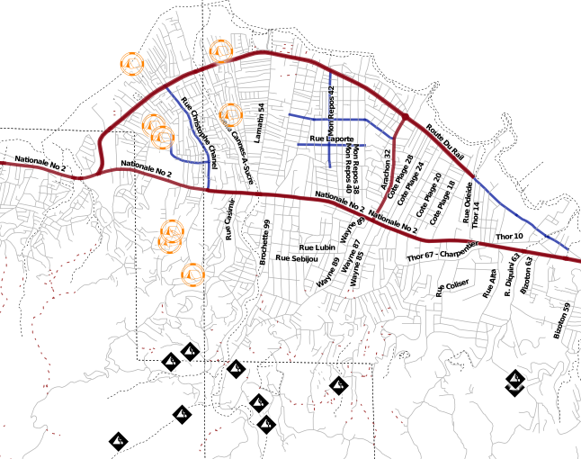

Haiti Styles¶
Sandbox for keeping haiti specific style renderings.

Note: styles based on maps in EPSG:4326 running Mapnik 0.7.
Mapnik compatible names when using TrueType Fonts ('ersV2txt' from http://www.fgdc.gov/HSWG/index.html):
>>> from mapnik import *
>>> fs = FontEngine.instance()
>>> for i in fs.face_names(): print i
...
ERS v2 Damage Regular
ERS v2 Incidents Regular
ERS v2 Infrastructures Stage 01 Regular
ERS v2 Infrastructures Stage 02 Regular
ERS v2 Infrastructures Stage 03 Regular
ERS v2 Infrastructures Stage 04 Regular
ERS v2 Natural Events Regular
ERS v2 Operations Stage 01 Regular
ERS v2 Operations Stage 02 Regular
ERS v2 Operations Stage 03 Regular
ERS v2 Operations Stage 04 Regular
Basic additions to osm2pgsql style for catching OSM tags that are emerging:
# haiti
node,way refugee text linear
node,way earthquake:damage text polygon
node,way impassable text linear
node,way name:ht text linear
Example of using TrueType fonts to try to utilize FGDC symbols:
<?xml version="1.0" encoding="utf-8"?>
<!DOCTYPE Map [
<!ENTITY maxscale_zoom0 "<MaxScaleDenominator>250000000000</MaxScaleDenominator>">
<!ENTITY maxscale_zoom1 "<MaxScaleDenominator>500000000</MaxScaleDenominator>">
<!ENTITY minscale_zoom1 "<MinScaleDenominator>200000000</MinScaleDenominator>">
<!ENTITY maxscale_zoom2 "<MaxScaleDenominator>200000000</MaxScaleDenominator>">
<!ENTITY minscale_zoom2 "<MinScaleDenominator>100000000</MinScaleDenominator>">
<!ENTITY maxscale_zoom3 "<MaxScaleDenominator>100000000</MaxScaleDenominator>">
<!ENTITY minscale_zoom3 "<MinScaleDenominator>50000000</MinScaleDenominator>">
<!ENTITY maxscale_zoom4 "<MaxScaleDenominator>50000000</MaxScaleDenominator>">
<!ENTITY minscale_zoom4 "<MinScaleDenominator>25000000</MinScaleDenominator>">
<!ENTITY maxscale_zoom5 "<MaxScaleDenominator>25000000</MaxScaleDenominator>">
<!ENTITY minscale_zoom5 "<MinScaleDenominator>12500000</MinScaleDenominator>">
<!ENTITY maxscale_zoom6 "<MaxScaleDenominator>12500000</MaxScaleDenominator>">
<!ENTITY minscale_zoom6 "<MinScaleDenominator>6500000</MinScaleDenominator>">
<!ENTITY maxscale_zoom7 "<MaxScaleDenominator>6500000</MaxScaleDenominator>">
<!ENTITY minscale_zoom7 "<MinScaleDenominator>3000000</MinScaleDenominator>">
<!ENTITY maxscale_zoom8 "<MaxScaleDenominator>3000000</MaxScaleDenominator>">
<!ENTITY minscale_zoom8 "<MinScaleDenominator>1500000</MinScaleDenominator>">
<!ENTITY maxscale_zoom9 "<MaxScaleDenominator>1500000</MaxScaleDenominator>">
<!ENTITY minscale_zoom9 "<MinScaleDenominator>750000</MinScaleDenominator>">
<!ENTITY maxscale_zoom10 "<MaxScaleDenominator>750000</MaxScaleDenominator>">
<!ENTITY minscale_zoom10 "<MinScaleDenominator>400000</MinScaleDenominator>">
<!ENTITY maxscale_zoom11 "<MaxScaleDenominator>400000</MaxScaleDenominator>">
<!ENTITY minscale_zoom11 "<MinScaleDenominator>200000</MinScaleDenominator>">
<!ENTITY maxscale_zoom12 "<MaxScaleDenominator>200000</MaxScaleDenominator>">
<!ENTITY minscale_zoom12 "<MinScaleDenominator>100000</MinScaleDenominator>">
<!ENTITY maxscale_zoom13 "<MaxScaleDenominator>100000</MaxScaleDenominator>">
<!ENTITY minscale_zoom13 "<MinScaleDenominator>50000</MinScaleDenominator>">
<!ENTITY maxscale_zoom14 "<MaxScaleDenominator>50000</MaxScaleDenominator>">
<!ENTITY minscale_zoom14 "<MinScaleDenominator>25000</MinScaleDenominator>">
<!ENTITY maxscale_zoom15 "<MaxScaleDenominator>25000</MaxScaleDenominator>">
<!ENTITY minscale_zoom15 "<MinScaleDenominator>12500</MinScaleDenominator>">
<!ENTITY maxscale_zoom16 "<MaxScaleDenominator>12500</MaxScaleDenominator>">
<!ENTITY minscale_zoom16 "<MinScaleDenominator>5000</MinScaleDenominator>">
<!ENTITY maxscale_zoom17 "<MaxScaleDenominator>5000</MaxScaleDenominator>">
<!ENTITY minscale_zoom17 "<MinScaleDenominator>2500</MinScaleDenominator>">
<!ENTITY maxscale_zoom18 "<MaxScaleDenominator>2500</MaxScaleDenominator>">
<!ENTITY minscale_zoom18 "<MinScaleDenominator>1000</MinScaleDenominator>">
<!-- FONT LEVELS (for operations and infra) -->
<!-- "level 3 - Operational, but partially damaged or partially incapacitated. -->
<!-- more info: http://www.fgdc.gov/HSWG/ref_pages/DamageOperational_ref.htm -->
<!-- http://www.fgdc.gov/HSWG/ref_pages/Operations_ref.htm -->
<!ENTITY operations1 "ERS v2 Operations Stage 01 Regular">
<!ENTITY operations2 "ERS v2 Operations Stage 02 Regular">
<!ENTITY operations3 "ERS v2 Operations Stage 03 Regular">
<!ENTITY operations4 "ERS v2 Operations Stage 04 Regular">
<!ENTITY camp "Q">
<!-- http://www.fgdc.gov/HSWG/ref_pages/Infrastructures_ref.htm -->
<!ENTITY infra1 "ERS v2 Infrastructures Stage 01 Regular">
<!ENTITY infra2 "ERS v2 Infrastructures Stage 01 Regular">
<!ENTITY infra3 "ERS v2 Infrastructures Stage 01 Regular">
<!ENTITY infra4 "ERS v2 Infrastructures Stage 01 Regular">
<!-- ERS v2 Natural Events Regular -->
<!-- only one font severity level -->
<!ENTITY events "ERS v2 Natural Events Regular">
<!ENTITY landslide "D">
<!-- ERS v2 Incidents Regular -->
<!-- only one font severity level -->
<!ENTITY incidents "ERS v2 Incidents Regular">
<!ENTITY civil_disturbance "A">
<!ENTITY civil_displacement "C">
<!-- these are likely unneeded, just severity background but can be found in other fonts -->
<!ENTITY damage "ERS v2 Damage Regular">
]>
<Map bgcolor="white" srs="+init=epsg:4326">
<Style name="Planet_osm_line_labels">
<Rule>
<Filter>([highway] <> '')</Filter>
<TextSymbolizer name="name" face_name="DejaVu Sans Bold" size="8" fill="rgb(0,0,0)" dy="6.720000000000001" placement="line" vertical_alignment="bottom" halo_radius="1" halo_fill="rgba(255,255,255,0.298039)" allow_overlap="true"></TextSymbolizer>
</Rule>
</Style>
<Style name="Planet_osm_line_style">
<Rule>
<Filter>([highway]='path')</Filter>
<LineSymbolizer>
<CssParameter name="stroke">darkred</CssParameter>
<CssParameter name="stroke-width">1</CssParameter>
<CssParameter name="stroke-opacity">0.7647059</CssParameter>
<CssParameter name="stroke-linejoin">bevel</CssParameter>
<CssParameter name="stroke-linecap">square</CssParameter>
<CssParameter name="stroke-dasharray">1.7, 2.7</CssParameter>
</LineSymbolizer>
</Rule>
<Rule>
<Filter>([highway]='secondary')</Filter>
<LineSymbolizer>
<CssParameter name="stroke">rgb(9,28,157)</CssParameter>
<CssParameter name="stroke-width">2.7</CssParameter>
<CssParameter name="stroke-opacity">0.7647059</CssParameter>
<CssParameter name="stroke-linejoin">bevel</CssParameter>
<CssParameter name="stroke-linecap">square</CssParameter>
</LineSymbolizer>
</Rule>
<Rule>
<Filter>(not [highway] <> '')</Filter>
<LineSymbolizer>
<CssParameter name="stroke">black</CssParameter>
<CssParameter name="stroke-width">.5</CssParameter>
<CssParameter name="stroke-dasharray">2,.2</CssParameter>
</LineSymbolizer>
</Rule>
<Rule>
<ElseFilter />
<LineSymbolizer>
<CssParameter name="stroke">rgb(177,177,177)</CssParameter>
<CssParameter name="stroke-width">.7</CssParameter>
</LineSymbolizer>
</Rule>
</Style>
<Style name="Planet_osm_line_primary">
<Rule>
<Filter>([highway]='primary')</Filter>
<LineSymbolizer>
<CssParameter name="stroke">rgb(136,0,15)</CssParameter>
<CssParameter name="stroke-width">3.7</CssParameter>
<CssParameter name="stroke-opacity">0.7647059</CssParameter>
<CssParameter name="stroke-linejoin">bevel</CssParameter>
<CssParameter name="stroke-linecap">square</CssParameter>
</LineSymbolizer>
</Rule>
<Rule>
<Filter>([highway]='primary_link')</Filter>
<LineSymbolizer>
<CssParameter name="stroke">rgb(98,44,70)</CssParameter>
<CssParameter name="stroke-width">3.2</CssParameter>
<CssParameter name="stroke-opacity">0.7647059</CssParameter>
<CssParameter name="stroke-linejoin">bevel</CssParameter>
<CssParameter name="stroke-linecap">square</CssParameter>
</LineSymbolizer>
</Rule>
</Style>
<Layer name="Planet_osm_line" srs="+init=epsg:4326">
<StyleName>Planet_osm_line_style</StyleName>
<StyleName>Planet_osm_line_primary</StyleName>
<StyleName>Planet_osm_line_labels</StyleName>
<Datasource>
<Parameter name="dbname">haiti_ll</Parameter>
<Parameter name="estimate_extent">0</Parameter>
<Parameter name="extent">-74.5891653,17.9536341,-71.6100215,20.0196174</Parameter>
<Parameter name="geometry_field">way</Parameter>
<Parameter name="srid">4326</Parameter>
<Parameter name="table">(SELECT way,highway,name FROM "planet_osm_line" ) as "planet_osm_line"</Parameter>
<Parameter name="type">postgis</Parameter>
<Parameter name="user">postgres</Parameter>
</Datasource>
</Layer>
<Style name="refugee_camps">
<Rule>
&maxscale_zoom5;
&minscale_zoom9;
<TextSymbolizer size="10" name='truetype' face_name='ERS v2 Operations Stage 03 Regular' fill='#FF8300' allow_overlap='true' halo_radius='1' halo_fill='rgba(255,255,255,.1)'/>
</Rule>
<Rule>
&maxscale_zoom10;
&minscale_zoom12;
<TextSymbolizer size="30" name='truetype' face_name='ERS v2 Operations Stage 03 Regular' fill='#FF8300' allow_overlap='true' halo_radius='1' halo_fill='rgba(255,255,255,.1)' />
</Rule>
<Rule>
&maxscale_zoom13;
&minscale_zoom14;
<TextSymbolizer size="45" name='truetype' face_name='ERS v2 Operations Stage 03 Regular' fill='#FF8300' allow_overlap='true' halo_radius='2' halo_fill='rgba(255,255,255,.1)' />
</Rule>
<Rule>
&maxscale_zoom15;
&minscale_zoom16;
<TextSymbolizer size="55" name='truetype' face_name='ERS v2 Operations Stage 03 Regular' fill='#FF8300' allow_overlap='true' halo_radius='3' halo_fill='rgba(255,255,255,.1)' />
</Rule>
<Rule>
&maxscale_zoom17;
<TextSymbolizer size="70" name='truetype' face_name='ERS v2 Operations Stage 03 Regular' fill='#FF8300' allow_overlap='true' halo_radius='3' halo_fill='rgba(255,255,255,.1)' />
</Rule>
</Style>
<Style name="landslide">
<Rule>
&maxscale_zoom5;
&minscale_zoom9;
<TextSymbolizer name="truetype" face_name="&events;" size="10" fill="black" allow_overlap="true" halo_radius="3" halo_fill="rgba(255,255,255,.1)"></TextSymbolizer>
</Rule>
<Rule>
&maxscale_zoom10;
&minscale_zoom12;
<TextSymbolizer name="truetype" face_name="&events;" size="20" fill="black" allow_overlap="true" halo_radius="3" halo_fill="rgba(255,255,255,.1)"></TextSymbolizer>
</Rule>
<Rule>
&maxscale_zoom13;
&minscale_zoom14;
<TextSymbolizer name="truetype" face_name="&events;" size="35" fill="black" allow_overlap="true" halo_radius="3" halo_fill="rgba(255,255,255,.1)"></TextSymbolizer>
</Rule>
<Rule>
&maxscale_zoom15;
&minscale_zoom16;
<TextSymbolizer name="truetype" face_name="&events;" size="45" fill="black" allow_overlap="true" halo_radius="3" halo_fill="rgba(255,255,255,.1)"></TextSymbolizer>
</Rule>
<Rule>
&maxscale_zoom17;
<TextSymbolizer name="truetype" face_name="&events;" size="65" fill="black" allow_overlap="true" halo_radius="3" halo_fill="rgba(255,255,255,.1)"></TextSymbolizer>
</Rule>
</Style>
<Layer name="refugee_camps" status="on" srs="+init=epsg:4326" clear_label_cache="true">
<StyleName>refugee_camps</StyleName>
<Datasource>
<Parameter name="dbname">haiti_ll</Parameter>
<Parameter name="estimate_extent">true</Parameter>
<Parameter name="host"></Parameter>
<Parameter name="user">postgres</Parameter>
<Parameter name="password"></Parameter>
<Parameter name="port"></Parameter>
<Parameter name="table">
(select way,'&camp;'::text as truetype from planet_osm_point
where "earthquake:damage" in ('spontaneous_camp','spontaneous_campsite')
or tourism = 'campsite'
or refugee is not null
) as labels</Parameter>
<Parameter name="type">postgis</Parameter>
</Datasource>
</Layer>
<Layer name="landslide" status="on" srs="+init=epsg:4326" clear_label_cache="true">
<StyleName>landslide</StyleName>
<Datasource>
<Parameter name="dbname">haiti_ll</Parameter>
<Parameter name="estimate_extent">true</Parameter>
<Parameter name="host"></Parameter>
<Parameter name="user">postgres</Parameter>
<Parameter name="password"></Parameter>
<Parameter name="port"></Parameter>
<Parameter name="table">
(select way,'&landslide;'::text as truetype from planet_osm_polygon
where "earthquake:damage" = 'landslide'
) as labels</Parameter>
<Parameter name="type">postgis</Parameter>
</Datasource>
</Layer>
</Map>